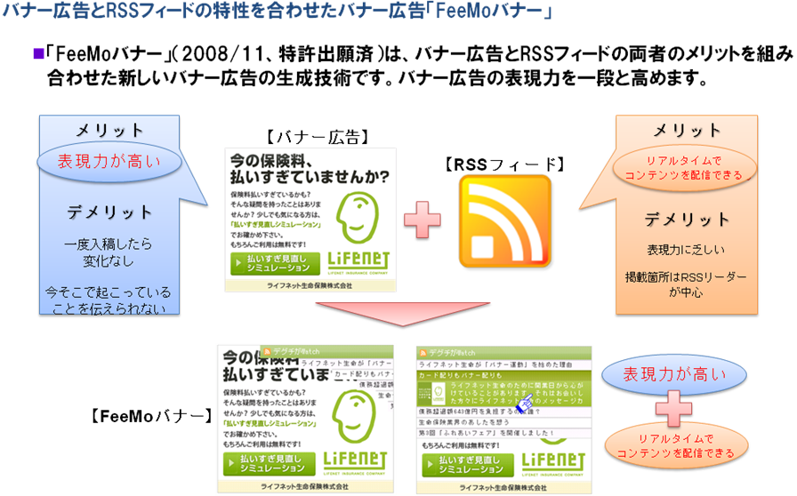

RSS広告社とcciグループ、新型バナー広告「FeeMoバナー」を共同推進
－日本最大級の広告配信ネットワーク「ADJUST」に採用決定－
株式会社サイバー・コミュニケーションズ（本社：東京都港区、代表執行役社長：長澤 秀行、以下cci）とcciの子会社である株式会社クライテリア・コミュニケーションズ（本社：東京都港区、代表取締役CEO：長澤 秀行、以下クライテリア）および株式会社RSS広告社（本社：東京都渋谷区、代表取締役社長：田中 弦、以下RSS広告社）は、RSS広告社の独自技術（特許出願済※図１）を利用して、広告主の最新コンテンツをバナー広告枠内に表示・更新させるサービス、「FeeMoバナー」を共同で商品開発し、提携メディアに対し導入を提案･推進していくことに合意しました。
今後cciグループとRSS広告社は提携メディアに対し「FeeMoバナー」ソリューションの採用を進め、まずは、7月3日より、cciグループが事業展開している日本最大級の広告配信ネットワーク「ADJUST（注1）」にて販売を開始します。「ADJUST」の持つ大規模かつ高精度のターゲティング技術と、広告の訴求力を高めて広告効果を高めることが期待される「FeeMoバナー」の組み合わせにより、広告主はメッセージをより的確にユーザーに伝えることができます。
ユーザーは「FeeMoバナー」により、従来のバナー広告では実現できなかった、広告主が提供する最新のコンテンツのリアルタイム受信、閲覧が可能となります。また、個々の最新コンテンツが表示された一覧よりマウスクリックひとつで自分の興味のある情報を選択し、ダイレクトにアクセスすることができます。
【広告主にとってのメリット】
「FeeMoバナー」はRSS（注2）フィードの技術を用いているため、広告主は公式ブログや新製品の情報などのRSSフィードを更新するだけで簡単にユーザーへのメッセージを変更できます。伝えたいメッセージを時間帯やイベントにあわせて伝えることができます。（例：本日更新したサービス情報などを即時に広告掲載するなど）
また、従来のバナー広告では不可能であった、複数のページへのリンクを同時に掲載することが可能となるとともに、クリック率が改善することが実証されているため、より多くのユーザーを広告主のサイトへ誘導することが期待できます。
【メディアにとってのメリット】
「FeeMoバナー」により、通常よりも高単価でのバナー広告販売が可能となります。また、クリック率の改善が期待できることから、バナー広告自体の商品価値の向上が見込めます。
■図１

{kind=link}
・バナーサンプル：http://www.rssad.jp/service/feemobanner.html
注1） 「ADJUST」とは、cciとクライテリアが展開する日本最大級のインターネットアドネットワークサービスです。
注2） 「RSS」とは、ウェブサイトの更新情報を簡単にまとめ、配信するための文書形式です。インターネットメディアはRSSを利用することによって、ブログやニュースなどの記事の最新情報をユーザーに対し定期的に通知することができます。
【各社の概要】
・株式会社サイバー・コミュニケーションズ http://www.cci.co.jp/
(社名) 株式会社サイバー・コミュニケーションズ
(本社所在地) 東京都港区東新橋2-14-1 コモディオ汐留
(代表者) 代表執行役社長 長澤 秀行
(事業内容) インターネット広告の企画・制作・販売
(資本金) 24億5,773万円
・株式会社クライテリア・コミュニケーションズ http://criteria-com.jp/
(社名) 株式会社クライテリア・コミュニケーションズ
(本社所在地) 東京都港区東新橋2-4-6 パラッツォシエナ
(代表者) 代表取締役CEO 長澤 秀行
(事業内容) インターネット広告
(資本金) 16億5,251万円
・株式会社RSS広告社 http://www.rssad.jp/
RSS広告社は平成17年4月、日本で初めてRSSフィードを利用した広告出稿/配信サービスを行うRSS広告専業企業として設立し、日本におけるRSS広告市場を自ら創造し、成長させ、進化させる会社として、RSSフィードを使ったさまざまな広告商品を開発、提供しています。
(社名) 株式会社RSS広告社
(本社所在地) 東京都渋谷区神南1-3-4 神南ビル７F
(代表者) 代表取締役社長 田中 弦
(事業内容) インターネット広告
(資本金) 1億7,945万円
【本リリースに関するお問合せ先】
株式会社サイバー・コミュニケーションズ
経営企画部 伊藤・東・大出
Tel：03-5425-6274
株式会社クライテリア・コミュニケーションズ
メディア本部 佐藤
Tel：03-5777-1230
株式会社RSS広告社
担当 田中
Tel: 03-6416-1290